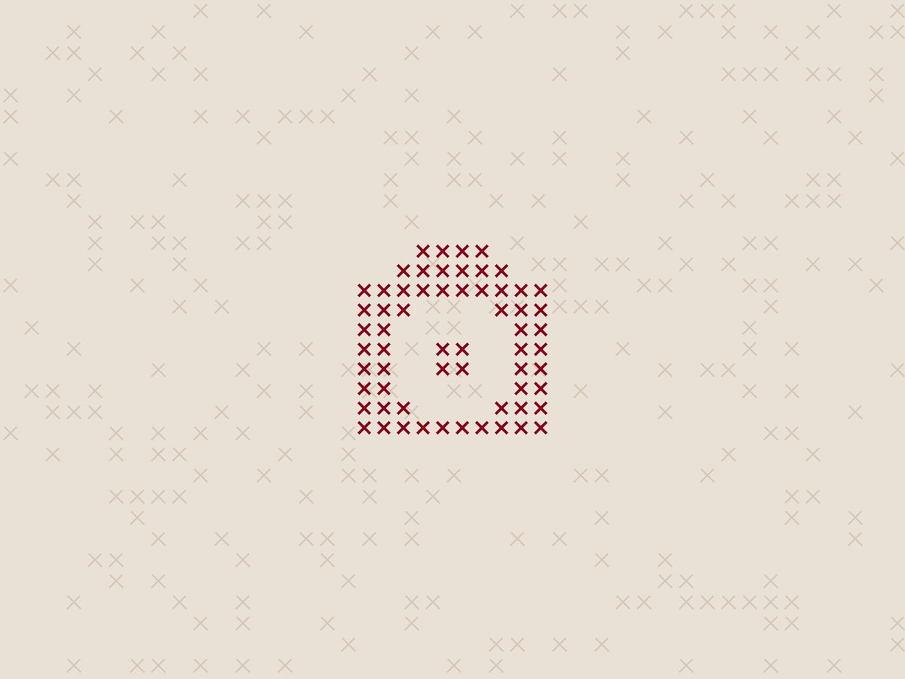
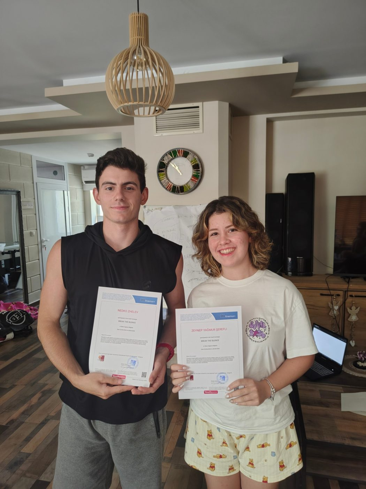
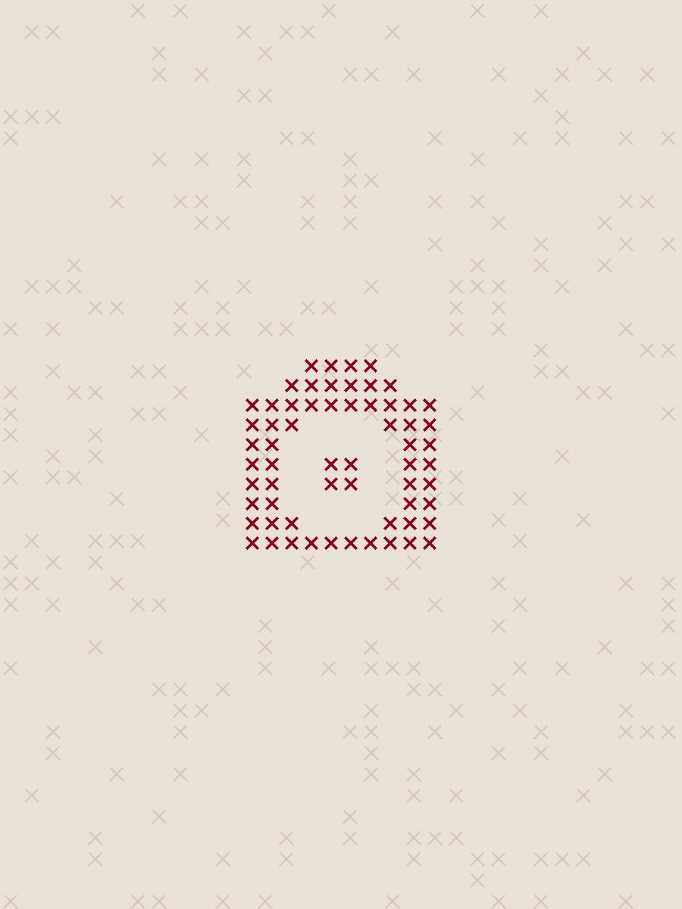

"Break the Silence" was an Erasmus+ youth exchange that brought together young people from Romania, Poland, Bulgaria and Turkey to explore theatre as a tool for dialogue and social change. Using the methods of the Theatre of the Oppressed, especially Forum Theatre, participants worked on giving a voice to experiences that often go unheard.
The first day, 23 June, focused on getting to know one another through team-building activities and theatre-based games that helped participants step outside their comfort zones and build the trust needed to work on sensitive social topics. The evening was hosted by the Romanian team, who taught traditional dances and served a homemade barbecue with mici, mujdei and other Romanian specialities.

On day two, participants went deeper into theatre as a method. Through improvisation and experimental exercises, they learned the principles of the Theatre of the Oppressed and how Forum Theatre and Newspaper Theatre work. In the afternoon, the creative process began: participants shared personal moments when they had felt oppressed or faced difficult situations, and discovered how many of these experiences were shared across cultures. The group chose four stories that resonated with everyone and began turning them into scenes using Image Theatre. The Turkish cultural evening that followed included traditional music, dances and sweets, and an interactive performance of a traditional Turkish wedding.
Day three took the group to Burgas on the Black Sea coast. The trip became an extension of the theatre work: participants observed people, places and everyday interactions as living scenes that reflect society, and learned about Bulgarian culture and daily life through conversations and exploration.
Day four was dedicated to the Forum Theatre performances. Participants refined their scenes, rehearsed and developed detailed background stories for each character. In the evening, they welcomed young people from Stara Zagora to a local Forum Theatre event at Youtopia. After an introduction to the Theatre of the Oppressed, the local audience did not just watch: they stepped into the scenes, proposed alternatives, tested solutions and changed the outcome of the conflicts together with the actors. The performances dealt with censorship and freedom, strict and abusive parenting, democracy and personal autonomy. The day closed with a Bulgarian cultural evening featuring kebapche, lyutenitsa, banitsa and homemade tarator.


Day five introduced Newspaper Theatre. Using real headlines from the previous days, groups turned news articles into short scenes in which one participant played a TV presenter and the others played viewers reacting at home. Through improvisation and open discussion, participants saw how the same headline can be interpreted in many ways depending on experience and values, and practised questioning what they read instead of accepting it at face value.
On day six, participants explored further improvisation techniques focused on trust, listening and communicating beyond words. They also worked on one of the project's key outcomes: a guidebook collecting the methods, activities and lessons of the exchange, designed to help other young people, youth workers and educators use theatre for dialogue, inclusion and social change. The evening belonged to the Polish team and their traditional food, music, dances and customs.